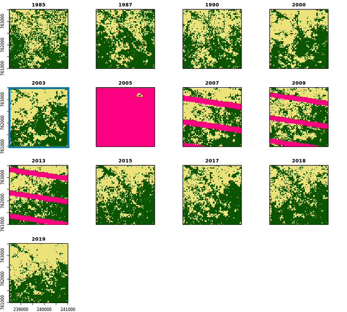

4.1.1 Production des cartes Forêt/Non-Forêt
La production de la carte forêt/non-forêt 2018 est basée sur la couverture des houppiers déterminée dans les parcelles d’entraînement, les images satellitaires Landsat (bandes et indices B, G, R, NIR, SWIR1, SWIR2, nbr, ndmi, ndvi, evi) et les données climatiques Worldclim (BIO1, BIO4, BIO12, BIO15).
Dans une première étape, les variables Landsat et Worldclim sont extraites pour toutes les parcelles d’entraînement de la période de référence 1.1.2017 - 31.12.2018 et les parcelles d’entraînement sont classées comme “forestières” ou “non forestières” en fonction de leur couverture des houppiers (forêt ≥ 30% de couverture des houppiers). Par la suite, des cartes forêt/non-forêt 2018 sont produites pour chaque chemin WRS. Pour cela, la fonction classify.image() est utilisée, qui crée un modèle de classification en utilisant l’algorithme RandomForest et une carte correspondante. Pour le chemin WRS central p193, l’algorithme de classification est calibré uniquement sur la base des parcelles d’entraînement. Pour les chemins p192 et p194, des données d’entraînement supplémentaires basées sur la carte p193 sont utilisées pour assurer la calibration entre les chemins.
Les cartes de référence générées pour 2018 sont maintenant utilisées pour générer les cartes correspondantes pour l’année 2003. Les données d’entraînement sont tirées de la carte de référence 2018, autour de la lisière des forêts. Pour les chemins p192 et p194, de nouves des données d’entraînement supplémentaires du chemin p193 sont utilisées.
Sur la base des cartes forêt/non-forêt de 2003, les cartes de toutes les années avec des images Landsat disponibles sont produites selon la même procédure. Le calibrage de toute la série sur la base d’une année de référence garantit une différenciation consistante entre les classes forêt et non-forêt. Enfin, les chemins p192, p193 et p194 sont fusionnés pour les années clés 1987, 2003, 2015 et 2018.
Example
La figure suivante illustre la série des 13 cartes forêt/non-forêt brutes dans une région au sud de Kpalimé. Les pixels en rose vif sont des pixels dont les données sont manquantes (nuages, ombres, L7 SLC-off). Voir série des cartes nettoyées pour comparaison.

Script R: 03_NRF-MRV/01_MCF/_src/01_create-FC-maps.R
###############################################################################
# 01_create-fc-maps.R: créer des cartes brutes du couvert forestier
# -----------------------------------------------------------------------------
# Bern University of Applied Sciences
# Oliver Gardi, <oliver.gardi@bfh.ch>
# 13 Mai 2020
# Définitions des variables ===================================================
# Seuil de la couverture des houppiers (forêt vs. non-forêt)
COV.FC <- 30
# Nombre de pixels à considerer comme lisière forêt
SAMPLE.DIST <- 1
# Nombre de pixels non-NA (sera déterminé plus tard)
N.PIXELS <- NA
# Part de pixels à prendre en compte pour la calibration des cartes
SAMPLE.RATIO <- 0.0025
# Part des pixels à prendre des autres chemins (calibration)
CAL.RATIO <- 0.75
# Bandes à utiliser pour la modélisation forêt vs. non-forêt
PREDICTORS <- c("B", "G", "R", "NIR", "SWIR1", "SWIR2",
"nbr", "ndmi", "ndvi", "evi",
"BIO1", "BIO4", "BIO12", "BIO15")
# Répertoires
LANDSAT.DIR <- DIR.SST.DAT.LST
WORLDCLIM.DIR <- DIR.SST.DAT.WC2
REF.DIR <- DIR.MRV.MCF.REF
RAW.DIR <- DIR.MRV.MCF.RAW
# Définitions des fonctions ===================================================
# Charger un image Landsat ----------------------------------------------------
#
# @param filename Chemin du fichier landsat
#
# @return Image Landsat avec bandes nommées
#
load.image <- function(filename) {
image <- brick(paste0(LANDSAT.DIR, filename))
names(image) <- SST.LSBANDS
return(image)
}
# Tirer des points d'entraînement d'une carte autour de la lisière forêt ------
#
# @param map Carte forêt/non-forêt à échantillonner
# @param n Nombre d'échantillons à tirer
#
# @return Points d'échantillon avec aatribut forêt/non-forêt
#
sample.map <- function(map, n) {
tmp.src <- tempfile(pattern = "", fileext = ".tif") # tmp carte forêt/non-forêt
tmp.dst1 <- tempfile(pattern = "", fileext = ".tif") # tmp lisière à l'extérieur
tmp.dst3 <- tempfile(pattern = "", fileext = ".tif") # tmp lisière à l'intérieur
# Écrire la carte sur le disque
map <- writeRaster(map, tmp.src)
# Forêt + lisière à l'extérieur de la forêt
system(paste("gdal_proximity.py", tmp.src, tmp.dst1,
"-values", FOREST,
"-use_input_nodata YES",
"-maxdist ", SAMPLE.DIST,
"-fixed-buf-val", NONFOR))
dst1 <- raster(tmp.dst1)
NAvalue(dst1) <- 65535
cat(" ")
# Non-forêt + lisière à l'intérieur de la forêt
system(paste("gdal_proximity.py", tmp.src, tmp.dst3,
"-values", NONFOR,
"-use_input_nodata YES",
"-maxdist ", SAMPLE.DIST,
"-fixed-buf-val", FOREST))
dst3 <- raster(tmp.dst3)
NAvalue(dst3) <- 65535
# Masquer la carte avec les lisières
map <- mask(map, dst1)
map <- mask(map, dst3)
# Supprimer les fichiers temporaires
unlink(c(tmp.src, tmp.dst1, tmp.dst3))
# Echantillonnage stratifié des lisières forêt et non-forêt
n.classes <- length(unique(map))
cat(paste0(" -Sampling map (n=", n.classes, "*", round(n/n.classes), ") ... "))
sample.pts <- sampleStratified(map, round(n/n.classes), sp=TRUE)[,-1]
names(sample.pts) <- "CLASS"
cat("done\n")
return(sample.pts)
}
# Classification d'une image -------------------------------------------
#
# @param image Image Landsat à classifier
# @param filename Nom de fichier pour la sauvegarde de la carte
# @param bioclim Raster des variables bioclimatiques à utiliser
# @param train.pts Points d'entraînement
# @param ref.map Carte de référence
# @param n.ref.map Nombre de points à échantilloner
# @param cal.map Carte de calibration (autre chemin WRS)
# @param n.cal.map Nombre de points à échantilloner
# @param mask Masque à utiliser pour ref.map et cal.map
# @param preds Variables à utiliser pour le modèle
# @param type Modèle de classification ou de regression
# @param crossval Faire validation croisée (3 * 10-fold)
# @param prob Produire également carte de probabilité
# @param n.cores Nombre de processeurs à utiliser pour prédiction
#
# @return List avec les éléments
# - model,
# - carte forêt/non-forêt
# - carte des probabilités (si disponible)
#
classify.image <- function(image, filename, bioclim=NULL, train.pts=NULL,
ref.map=NULL, n.ref.map=NULL,
cal.map=NULL, n.cal.map=NULL,
mask=NULL, preds=NULL, type="classification",
crossval=FALSE, prob=FALSE, n.cores=8) {
# Ouvrir le fichier journal
txtfile <- paste0(sub("[.]tif$", "", filename), ".txt")
cat("-- Image classification: ", basename(filename), "/",
date(), " --\n", file=txtfile)
# Charger des points d'entraînement ---------------------
if(!is.null(train.pts)) {
cat(" -Loading training points ... ")
train.pts <- train.pts[,1] # utiliser que la première colonne ...
names(train.pts) <- "CLASS" # ... et nommer "CLASS"
set_ReplCRS_warn(FALSE)
proj4string(train.pts) <- proj4string(image) # Système de coordonnées CRS
cat("done\n")
cat("Training points:", nrow(train.pts), "\n", file=txtfile, append=TRUE)
}
# Ajouter des points d'une carte de référence -----------
if(!is.null(ref.map)) {
cat(paste0(" -Masking / buffering reference map ... \n"))
# ... couper/masquer avec l'image
ref.map <- mask(crop(ref.map, image[[1]]), crop(image[[1]], ref.map))
# ... et masque additionelle (si disponible)
if(!is.null(mask)) ref.map <- mask(ref.map, mask)
# Découper la carte de calibration (si disponible)
if(!is.null(cal.map)) {
tmp <- extend(crop(cal.map, ref.map), ref.map)
ref.map <- mask(ref.map, tmp, inverse=TRUE)
}
cat(" ")
# Tirer des points d'échantillon ...
ref.pts <- sample.map(ref.map, n.ref.map)
cat("Ref-map points: ", nrow(ref.pts), "/", ref.map@file@name, "/",
SAMPLE.DIST, "px\n", file=txtfile, append=TRUE)
# ... et ajouter aux points d'entraînement
if(is.null(train.pts)) {
train.pts <- ref.pts
} else {
train.pts <- rbind(train.pts, ref.pts)
}
}
# Ajouter des points d'une carte de calibration ---------
if(!is.null(cal.map)) {
cat(paste0(" -Masking / buffering calibration map ... \n"))
# ... couper/masquer avec l'image
cal.map <- mask(crop(cal.map, image[[1]]), crop(image[[1]], cal.map))
# ... et masque additionelle (si disponible)
if(!is.null(mask)) cal.map <- mask(cal.map, mask)
cat(" ")
# Tirer des points d'échantillon ...
cal.pts <- sample.map(cal.map, n.cal.map)
cat("Cal-map points: ", nrow(cal.pts), "from", cal.map@file@name, "/",
SAMPLE.DIST, "px\n", file=txtfile, append=TRUE)
# ... et ajouter aux points d'entraînement
if(is.null(train.pts)) {
train.pts <- cal.pts
} else {
train.pts <- rbind(train.pts, cal.pts)
}
}
# Nombre total des points d'entraînement
cat("Total points: ", nrow(train.pts), "\n", file=txtfile, append=TRUE)
# Extraire les variables correspondantes ----------------
# Utiliser toutes les variables si non-spécifiées dans les paramètres
if(is.null(preds)) {
preds <- names(image)
if(!is.null(bioclim)) preds <- c(preds, names(bioclim))
}
# Extraire les variables Landsat ...
cat(" -Extracting pixel values for bands:", preds, "... ")
train.pts <- raster::extract(image, train.pts, sp=TRUE)
# ... et Bioclim
if(!is.null(bioclim)) train.pts <- raster::extract(bioclim, train.pts, sp=TRUE)
# Ignorer des lignes avec NAs
train.dat <- na.omit(train.pts@data)[, c("CLASS", preds)]
# Calibration du modèle Random Forest -------------------
# Variable catégorielle -> mode de classification, autrement -> régression
if(type=="classification") train.dat[,1] <- as.factor(train.dat[,1])
cat("done\n")
cat(" -Calibrating RandomForest ... ")
sink(txtfile, append=TRUE)
# Utiliser caret::train pour validation croisée (a besoin de beaucoup de temps)
if(crossval) {
map.model.cv <- train(y = train.dat[,1],
x = train.dat[,-1],
method = "rf", # RandomForest
importance = TRUE,
trControl = trainControl(
method = "repeatedcv",
number = 10, # k-fold
repeats = 3)) # répétitions
print(map.model.cv)
map.model <- map.model.cv$finalModel
print(map.model)
cat("\n")
print(varImp(map.model, scale=FALSE))
# autrement randomForest directement
} else {
map.model <- randomForest(y=train.dat[,1], x=train.dat[,-1], importance=TRUE) # , do.trace=100)
#
# Parallélisation de RandomForest : cpossible, mais confusion, err.rate, mse et rsq seront NULL
# https://stackoverflow.com/questions/14106010/parallel-execution-of-random-forest-in-r
# map.model <- foreach(ntree=rep(100, 5), .combine=randomForest::combine, .multicombine=TRUE, .packages='randomForest') %dopar% {
# randomForest(x=ref.pts[,!(names(ref.pts) == "CLASS")], y=ref.pts$CLASS, importance=TRUE, ntree=ntree)
#
print(map.model)
cat("\n")
print(varImp(map.model))
}
sink()
# Mesures des erreurs
if(type=="treecover") {
cat("R2:", round(map.model$rsq[500], 2), "RMSE:", round(sqrt(map.model$mse[500]), 2), "\n")
} else {
cat("OOB error rate:", round(map.model$err.rate[500,1], 2), "\n")
}
# Classification de la carte forêt/non-forêt ------------
dir.create(dirname(filename), recursive=TRUE, showWarnings=FALSE)
cat(" -Creating map ... ")
# empiler les couches Landsat et bioclim
if(!is.null(bioclim)) image <- stack(image, crop(bioclim, image))
# classifier l'image sur différents procésseurs en parallèle
beginCluster(n=n.cores)
map <- clusterR(image, predict, args=list(model=map.model))
endCluster()
# sauvegarder la carte
cat("writing map ... ")
# convertir en %, si c'est une carte couverture houppier
if(type=="treecover") map <- floor(map*100)
map <- writeRaster(map, filename=filename, format="GTiff", datatype="INT2U", overwrite=TRUE)
cat("done\n")
# Calculer une carte de probabilité ---------------------
if(prob==TRUE) {
cat(" -Creating probability map ... ")
beginCluster(n=n.cores)
prob.map <- clusterR(image, predict, args=list(model=map.model, type="prob"))
endCluster()
cat("writing map ... ")
writeRaster(prob.map, filename=sub("\\.tif", "_prob.tif", filename), format="GTiff", overwrite=TRUE)
cat("done\n")
} else {
prob.map <- NULL
}
cat("-- Done: ", basename(filename), "/", date(), " --\n", file=txtfile, append=TRUE)
invisible(list(
"model" = map.model,
"map" = map,
"prob" = prob.map
))
}
# COMMENCER LE TRAITEMENT #####################################################
# Charger images 2018 ---------------------------------------------------------
ref.p192 <- brick(paste0(LANDSAT.DIR, "/p192/p192_2018_m.tif"))
ref.p193 <- brick(paste0(LANDSAT.DIR, "/p193/p193_2018_m.tif"))
ref.p194 <- brick(paste0(LANDSAT.DIR, "/p194/p194_2018_m.tif"))
names(ref.p192) <- names(ref.p193) <- names(ref.p194) <- SST.LSBANDS
ref.images <- list(p192=ref.p192, p193=ref.p193, p194=ref.p194)
# Détérminer le nombre de pixels non-NA
N.PIXELS <- list(p192 = ncell(ref.p192[["B"]]) - summary(ref.p192)["NA's","B"],
p193 = ncell(ref.p193[["B"]]) - summary(ref.p193)["NA's","B"],
p194 = ncell(ref.p194[["B"]]) - summary(ref.p194)["NA's","B"])
# Charger variables bioclim
bioclim.p192 <- brick(paste0(WORLDCLIM.DIR, "/p192/p192_bioclim.tif"))
bioclim.p193 <- brick(paste0(WORLDCLIM.DIR, "/p193/p193_bioclim.tif"))
bioclim.p194 <- brick(paste0(WORLDCLIM.DIR, "/p194/p194_bioclim.tif"))
names(bioclim.p192) <- names(bioclim.p193) <- names(bioclim.p194) <- SST.BIOCLIM
bioclim <- list(p192=bioclim.p192, p193=bioclim.p193, p194=bioclim.p194)
# Charger points d'entraînement -----------------------------------------------
train.plots <- readOGR(paste0(DIR.SST.BDD.TPS, "/COV_parcelles.shp"))
train.plots <- train.plots[!is.na(train.plots$ccov), # couverture des houppiers!
c("PLOTID", "ccov", "img_date", "author")]
# Convertir les polygones des parcelles en points spatiaux (centroïdes)
train.points <- SpatialPointsDataFrame(gCentroid(train.plots, byid=TRUE),
data.frame(author=train.plots$author,
ccov=train.plots$ccov,
img_date=as.Date(train.plots$img_date)))
# Pour la calibration de l'image 2018, sélectionner uniquement les points
# d'entraînement dont la date de l'image GoogleEarth est entre le 1.1.2017 et le 31.12.2019
train.points <- train.points[!is.na(train.points$img_date) &
train.points$img_date > as.Date("2017-01-01") &
train.points$img_date <= as.Date("2019-12-31"), ]
# Illustrer la répartition des observations
pdf(paste0(REF.DIR, "/training-pts_2018.pdf"))
plot(train.points)
dev.off()
# Extraire les valeurs d'image pour les points d'entraînement (en parallèle)
registerDoParallel(CORES)
train.points <- foreach(i=1:length(ref.images), .combine=rbind) %dopar% {
pts <- raster::extract(ref.images[[i]], train.points, sp=TRUE)
pts <- raster::extract(bioclim[[i]], pts, sp=TRUE)
pts$image <- names(ref.images[i])
pts[, c("author", "image", "ccov", SSTS.BANDS, SSTS.BIOCLIM)]
}
# Supprimer les lignes avec des NA
train.points <- train.points[!is.na(rowSums(train.points@data[,-(1:2)])), ]
# Réorganiser le tableau des attributs (F10: forêt/non-forêt à 10% / F30: à 30%)
train.points@data <- cbind(train.points@data[,c("image", "ccov")],
F10=cut(train.points$ccov,
breaks=c(0.0,0.1,1.0), labels=c(NONFOR, FOREST),
right=FALSE, include.lowest=TRUE),
F30=cut(train.points$ccov,
breaks=c(0.0,0.3,1.0), labels=c(NONFOR, FOREST),
right=FALSE, include.lowest=TRUE),
train.points@data[,c(SSTS.LSBANDS, SSTS.BIOCLIM)])
# Séléction des variables explicatives ----------------------------------------
cov.varsel <- rfe(y=train.points@data[train.points$image=="p193", "ccov"],
x=train.points@data[train.points$image=="p193", PREDICTORS],
sizes = c(4, 6, 8, 10),
rfeControl=rfeControl(
functions=rfFuncs, # utiliser RandomForest
method = "repeatedcv", # validation croisée
number = 10, # 10-fold
repeats = 3)) # 3 répétitions
print(cov.varsel)
predictors(cov.varsel)
plot(cov.varsel, type=c("g", "o"))
# Carte de la couverture des houppiers pour 2018 (TODO) -----------------------
set.seed(RSEED)
p193.2018.cov <- classify.image(image = load.image("/p193/p193_2018_m.tif"),
bioclim = bioclim[["p193"]],
filename = paste0(REF.DIR, "/p193_2018_COV_R.tif"),
train.pts = train.points[train.points$image == "p193", "ccov"],
preds = PREDICTORS,
type = "treecover",
crossval = TRUE,
n.cores = 32)
# observé vs. prédit
pdf(paste0(REF.DIR, "/p193_2018_COV_R.pdf"))
plot(p193.2018.cov[["model"]]$y, p193.2018.cov[["model"]]$predicted, xlim=c(0,1), ylim=c(0,1),
main="Couverture houppier p193", xlab="Observation", ylab="Prédiction")
abline(0,1)
dev.off()
# Cartes de référence du couvert forestier 2018 -------------------------------
# Chemin WRS p193
set.seed(RSEED)
classify.image(image = load.image("/p193/p193_2018_m.tif"),
bioclim = bioclim[["p193"]],
filename = paste0(REF.DIR, "/FC", COV.FC, "/p193_2018_FC", COV.FC, "_R.tif"),
train.pts = train.points[train.points$image == "p193", paste0("F", COV.FC)],
preds = PREDICTORS,
prob = TRUE,
crossval = TRUE,
n.cores = 32)
# Chemins WRS p192 and p194, utilisant p193 pour calibration
set.seed(RSEED)
registerDoParallel(CORES)
foreach(path=c("p192", "p194")) %dopar% { # traitement en parallèle
train.pts <- train.points[train.points$image == path, paste0("F", COV.FC)]
classify.image(image = load.image(paste0("/", path, "/", path, "_2018_m.tif")),
bioclim = bioclim[[path]],
filename = paste0(REF.DIR, "/FC", COV.FC, "/", path, "_2018_FC", COV.FC, "_R.tif"),
train.pts = train.pts,
# calibration avec carte p193 ...
cal.map = raster(paste0(REF.DIR, "/FC", COV.FC, "/p193_2018_FC", COV.FC, "_R.tif")),
n.cal.map = max(2000, nrow(train.pts)/CAL.RATIO), # ... avec au moin 2000 points
preds = PREDICTORS,
mask = TGO,
prob = TRUE,
n.cores = 32)
}
# Cartes de référence du couvert forestier 2003 -----------------------------------------
# Chemin WRS p193
set.seed(RSEED)
classify.image(image = load.image("/p193/p193_2003_m.tif"),
bioclim = bioclim[["p193"]],
filename = paste0(REF.DIR, "/FC", COV.FC, "/p193_2003_FC", COV.FC, "_R.tif"),
# sur base de la carte de référence 2018
ref.map = raster(paste0(REF.DIR, "/FC", COV.FC, "/p193_2018_FC", COV.FC, "_R.tif")),
n.ref.map = 2 * SAMPLE.RATIO * N.PIXELS[["p193"]],
preds = PREDICTORS,
mask = TGO,
n.cores = 32)
# Chemins WRS p192 and p194, utilisant p193 pour calibration
set.seed(RSEED)
registerDoParallel(CORES)
foreach(path=c("p192", "p194")) %dopar% { # traitement en parallèle
classify.image(image = load.image(paste0("/", path, "/", path, "_2003_m.tif")),
bioclim = bioclim[[path]],
filename = paste0(REF.DIR, "/FC", COV.FC, "/", path, "_2003_FC", COV.FC, "_R.tif"),
# sur base de la carte de référence 2018 ...
ref.map = raster(paste0(REF.DIR, "/FC", COV.FC, "/", path, "_2018_FC", COV.FC, "_R.tif")),
n.ref.map = 2 * (1 - CAL.RATIO) * SAMPLE.RATIO * N.PIXELS[[path]],
# ... et calibration avec carte p193 ...
cal.map = raster(paste0(REF.DIR, "/FC", COV.FC, "/p193_2003_FC", COV.FC, "_R.tif")),
n.cal.map = 2 * CAL.RATIO * SAMPLE.RATIO * N.PIXELS[[path]],
preds = PREDICTORS,
mask = TGO,
n.cores = 32)
}
# Cartes du couvert forestier brutes pour toutes les dates --------------------
# Chemin WRS p193
set.seed(RSEED)
registerDoParallel(CORES)
foreach(file=dir(paste0(LANDSAT.DIR, "/p193"), pattern="\\_[[:digit:]]+\\_m\\.tif")) %dopar% {
classify.image(image = load.image(paste0("/p193/", file)),
bioclim = bioclim[["p193"]],
filename = paste0(RAW.DIR, "/FC", COV.FC, "/p193/", sub("\\_m\\.tif$", paste0("_F", COV.FC, "r.tif"), file)),
ref.map = raster(paste0(REF.DIR, "/FC", COV.FC, "/p193_2003_FC", COV.FC, "_R.tif")),
n.ref.map = SAMPLE.RATIO * N.PIXELS[["p193"]],
preds = PREDICTORS,
mask = TGO,
n.cores = 6)
}
# fusionner les deux tuiles p193_1990
merge(raster(paste0(RAW.DIR, "/FC", COV.FC, "/p193/p193_1990_1_F", COV.FC, "r.tif")),
raster(paste0(RAW.DIR, "/FC", COV.FC, "/p193/p193_1990_2_F", COV.FC, "r.tif")),
filename=paste0(RAW.DIR, "/FC", COV.FC, "/p193/p193_1990_F", COV.FC, "r.tif"),
format="GTiff", datatype="INT2U", overwrite=TRUE)
# Chemins WRS p192 and p194, utilisant ...
set.seed(RSEED)
registerDoParallel(CORES)
foreach(file=c(dir(paste0(LANDSAT.DIR, "/p192"), pattern="\\_[[:digit:]]+\\_m\\.tif"),
dir(paste0(LANDSAT.DIR, "/p194"), pattern="\\_[[:digit:]]+\\_m\\.tif"))) %dopar% {
path <- sub("\\_.*", "", file)
# ... carte p193 pour la calibration (s'il existe, pour la même année)
if(file.exists(paste0(RAW.DIR, "/FC", COV.FC, "/p193/", sub("\\_m\\.tif$", paste0("_F", COV.FC, "r.tif"), sub(path, "p193", file))))) {
cal.map <- raster(paste0(RAW.DIR, "/FC", COV.FC, "/p193/", sub("\\_m\\.tif$", paste0("_F", COV.FC, "r.tif"), sub(path, "p193", file))))
n.cal.map <- CAL.RATIO * SAMPLE.RATIO * N.PIXELS[[path]]
} else {
cal.map <- NULL
n.cal.map <- NULL
}
classify.image(image = load.image(paste0("/", path, "/", file)),
bioclim = bioclim[[path]],
filename = paste0(RAW.DIR, "/FC", COV.FC, "/", path, "/", sub("\\_m\\.tif$", paste0("_F", COV.FC, "r.tif"), file)),
ref.map = raster(paste0(REF.DIR, "/FC", COV.FC, "/", path, "_2003_FC", COV.FC, "_R.tif")),
n.ref.map = (1 - CAL.RATIO) * SAMPLE.RATIO * N.PIXELS[[path]],
cal.map = cal.map,
n.cal.map = n.cal.map,
preds = PREDICTORS,
mask = TGO,
n.cores = 6)
}
# Fusionner les cartes p192, p193 et p194 pour les dates clés ... -------------
for(year in YEARS.REF) {
merge(mask(crop(brick(paste0(RAW.DIR, "/FC", COV.FC, "/p193/p193_", year, "_F", COV.FC, "r.tif")),TGO), TGO),
mask(crop(brick(paste0(RAW.DIR, "/FC", COV.FC, "/p192/p192_", year, "_F", COV.FC, "r.tif")),TGO), TGO),
mask(crop(brick(paste0(RAW.DIR, "/FC", COV.FC, "/p194/p194_", year, "_F", COV.FC, "r.tif")),TGO), TGO),
filename=paste0(RAW.DIR, "/FC", COV.FC, "/TGO/TGO_", year, "_F", COV.FC, "r.tif"), overwrite=TRUE)
}
# ... et le cartes de référence 2018 et 2003
for(map in c(paste0("2018_FC", COV.FC, "_R"),
paste0("2018_FC", COV.FC, "_R_prob"),
paste0("2003_FC", COV.FC, "_R"))) {
merge(mask(crop(brick(paste0(REF.DIR, "/FC", COV.FC, "/p193_", map, ".tif")),TGO), TGO),
mask(crop(brick(paste0(REF.DIR, "/FC", COV.FC, "/p192_", map, ".tif")),TGO), TGO),
mask(crop(brick(paste0(REF.DIR, "/FC", COV.FC, "/p194_", map, ".tif")),TGO), TGO),
filename=paste0(REF.DIR, "/FC", COV.FC, "/TGO_", map, ".tif"), overwrite=TRUE)
}